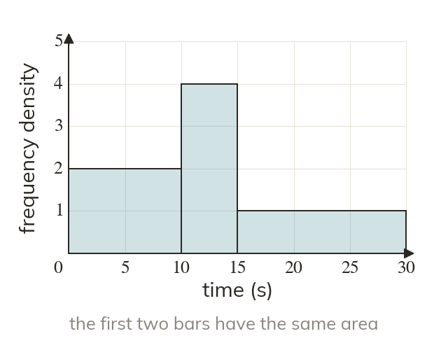
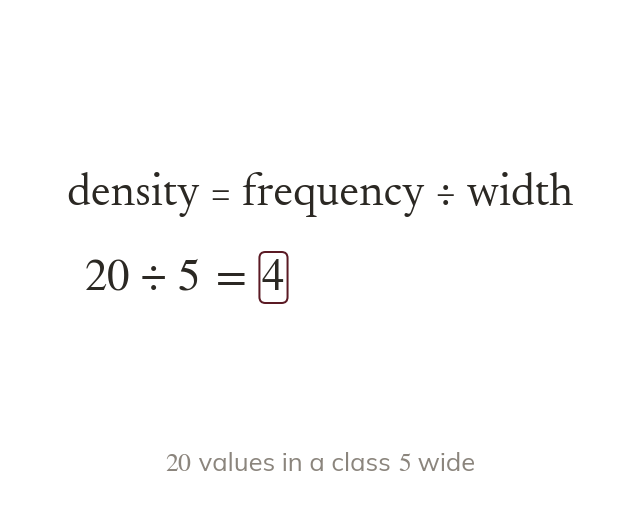
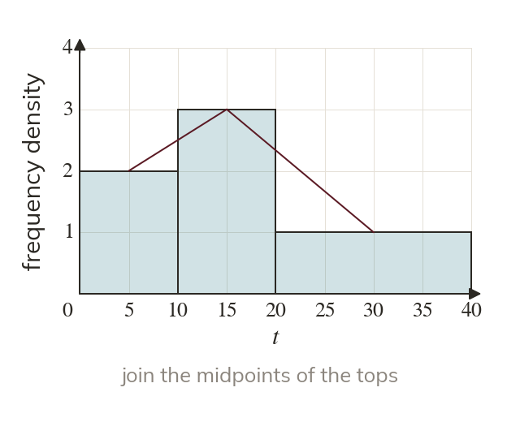
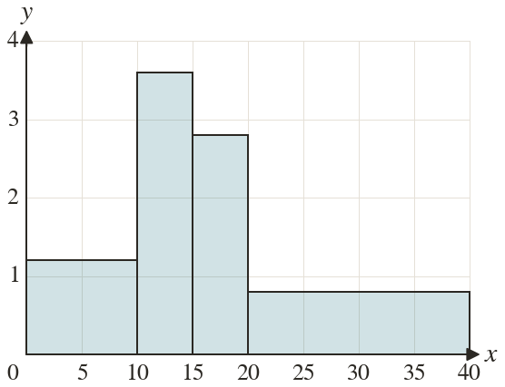
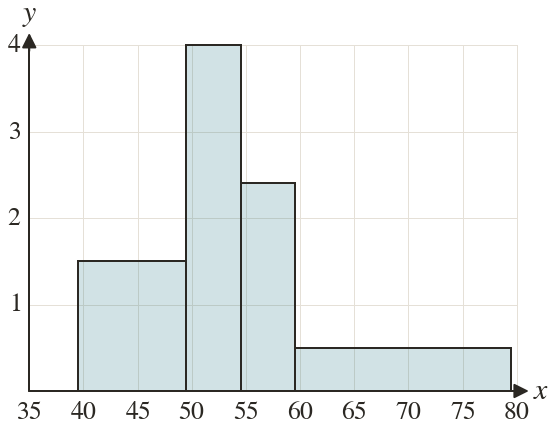
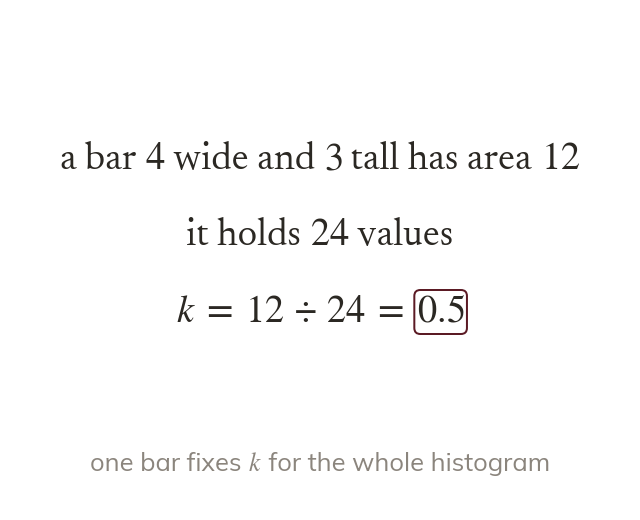
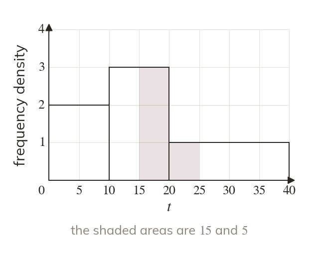
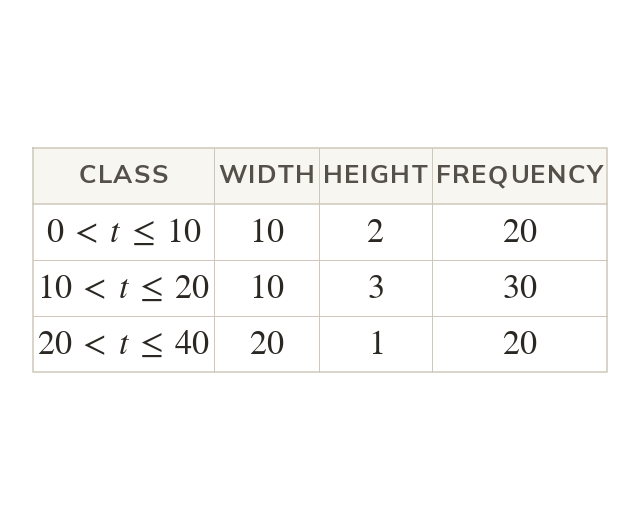
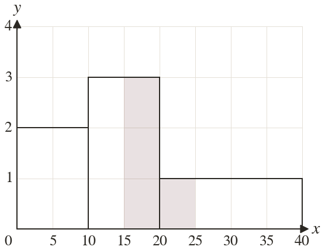

Area shows frequency
In a histogram the area of each bar is proportional to the frequency of its class. A narrow bar must be taller to hold the same number of values.
When classes have unequal widths, bars drawn to the frequencies mislead, so a histogram shows each frequency by the area of its bar. Areas let you estimate how many values lie in any interval, and the last lesson of the chapter uses these shapes to compare data sets.
Work down the page at your own pace. Write every answer in your book first, then click to check it.
Read each card, then follow the worked examples one step at a time.

In a histogram the area of each bar is proportional to the frequency of its class. A narrow bar must be taller to hold the same number of values.

When area equals frequency, the height of each bar is its frequency density. Divide the frequency by the class width.

A frequency polygon joins the midpoints of the tops of the bars with straight lines. It shows the shape of the data.


Pick an answer. If it's wrong, the feedback tells you which mistake it was.
Write the blanks in your book first, then tap each one to check.
Read each card, then follow the worked examples one step at a time.

When area is not equal to frequency, use one bar to find from area × frequency. Then any frequency is area ÷

Assume the values are spread evenly through each class. Take the part of each bar that lies in the range.

Each frequency is a bar's width times its height when
Add them for the total.

Pick an answer. If it's wrong, the feedback tells you which mistake it was.
Write the blanks in your book first, then tap each one to check.
Finished? Next lesson: S3.5 Comparing Data.
For each skill, tap the one that is true for you today. Your Revise pages start with anything you mark Not yet.
Your ratings are saved on this device only.
Log in, then search for a code to practise that skill.